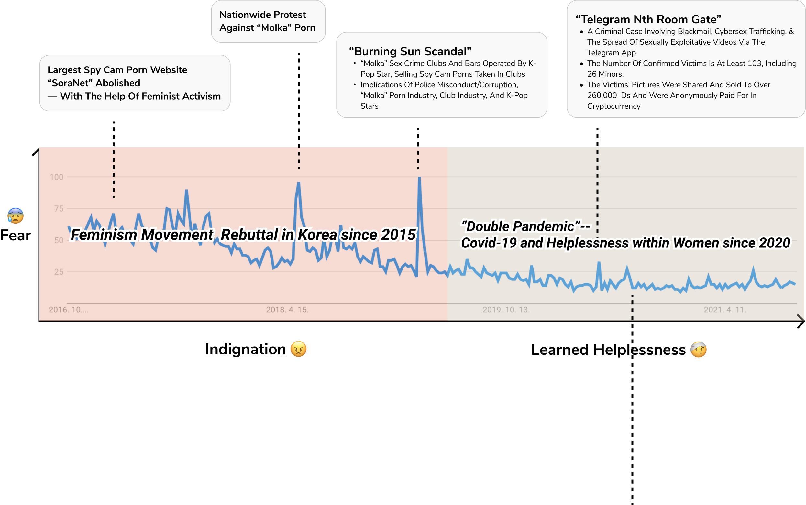
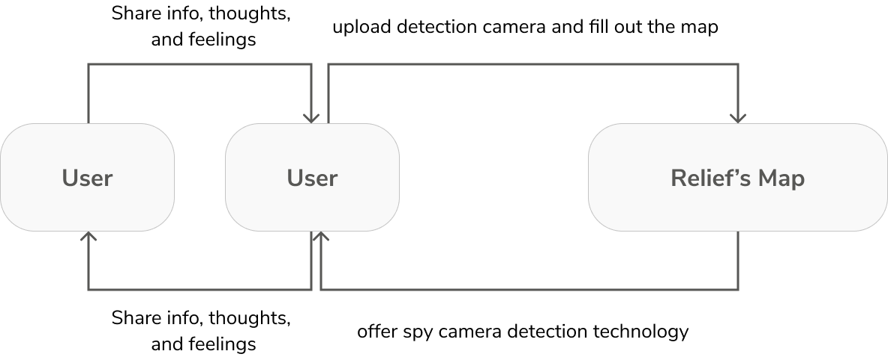
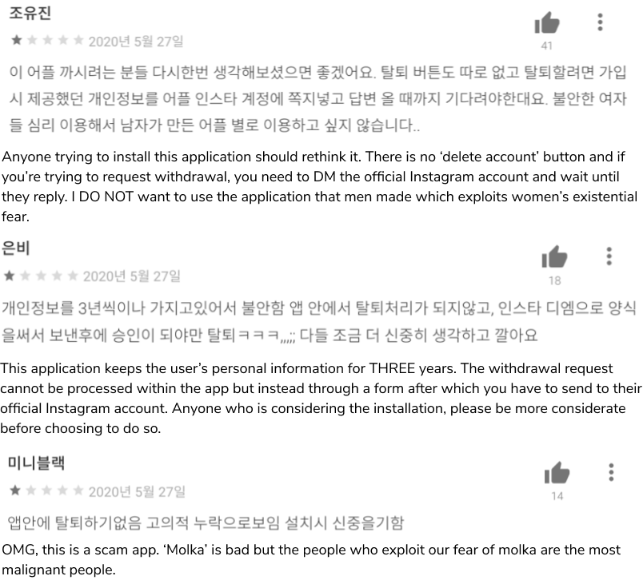
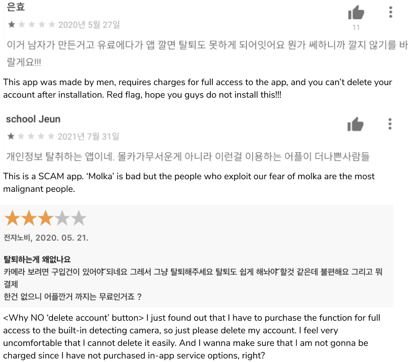
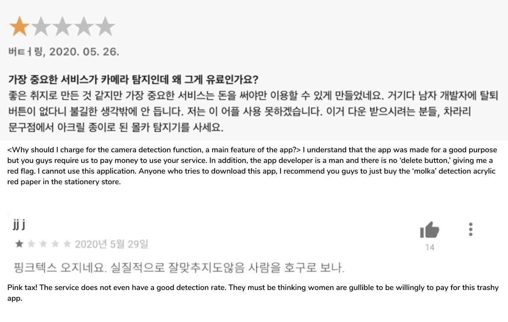
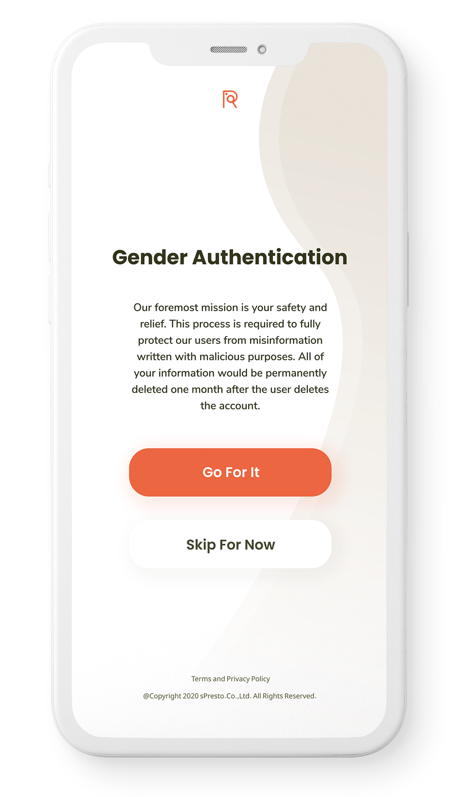

<!DOCTYPE html>
<html lang="en">
  <head>
    <meta charset="UTF-8" />
    <meta http-equiv="X-UA-Compatible" content="IE=edge" />
    <meta name="viewport" content="width=device-width, initial-scale=1.0" />

    <link rel="preconnect" href="https://fonts.googleapis.com">
    <link rel="preconnect" href="https://fonts.gstatic.com" crossorigin>

    <!-- Favicon -->
    <link rel="icon" href="assets/images/favicon-512.png" />
    <link
      rel="apple-touch-icon"
      href="assets/images/apple-touch-icon-180.png"
    />
    <link rel="manifest" href="manifest.webmanifest" />
    <!-- Baskerville Adobe Font -->
    <link rel="stylesheet" href="https://use.typekit.net/xpv3nqu.css">
    <!-- Proza Libre Google Font -->
    <link rel="preconnect" href="https://fonts.googleapis.com">
    <link rel="preconnect" href="https://fonts.gstatic.com" crossorigin>
    <link
      href="https://fonts.googleapis.com/css2?family=Proza+Libre:ital,wght@0,400;0,500;0,600;0,700;0,800;1,400;1,500;1,600;1,700;1,800&gidisplay=swap"
      rel="stylesheet"
    />

    <link rel="preconnect" href="https://fonts.googleapis.com" />
    <link rel="preconnect" href="https://fonts.gstatic.com" crossorigin />
    <link
      rel="stylesheet"
      href="https://maxcdn.bootstrapcdn.com/font-awesome/4.7.0/css/font-awesome.min.css"
    />

    <link
      rel="shortcut icon"
      type="image/jpg"
      href="/dist/assets/images/favicon.png"
    />
    <link rel="stylesheet" href="CSS/general.css"/>
    <link rel="stylesheet" href="CSS/queries.css"/>
    <link rel="stylesheet" href="CSS/1-portfolio-rm.css"/>

    <script
    type="module"
    src="https://unpkg.com/ionicons@5.5.2/dist/ionicons/ionicons.esm.js"
  ></script>
  <script
    nomodule
    src="https://unpkg.com/ionicons@5.5.2/dist/ionicons/ionicons.js"
  ></script>
  <script
    defer
    src="https://unpkg.com/smoothscroll-polyfill@0.4.4/dist/smoothscroll.min.js"
  ></script>
  <script defer src="js/script.js"></script>

  <title>Relief's Map</title>
  </head>
</html>

  <body>
    <header class="header">
      <!-- sticky... -->
      <a class="header-logo logo" href="index.html" id="home-logo">
        
      </a>
      <nav class="main-nav">
        <ul class="main-nav-list">
          <li>
            <a href="1-portfolio.html" class="main-nav-link header-link"
              >Portfolio</a
            >
          </li>
          <li>
            <a href="2-lab.html" class="main-nav-link header-link">Lab</a>
          </li>
          <li>
            <a href="3-writings.html" class="main-nav-link header-link">Writings</a>
          </li>
          <li>
            <a href="4-love.html" class="main-nav-link header-link"
              >Love</a
            >
          </li>
          <li>
            <a href="5-profile.html" class="main-nav-link header-link"
              >Profile</a
            >
          </li>
          <li>
            <a href="https://drive.google.com/file/d/1Ut0TmGXGRCDp_are8boA3uJvcR76D8wJ/view?usp=sharing"
            target="_blank" class="main-nav-link header-link"
              >Resume</a
            >
          </li>
        </ul>
      </nav>

      <button class="btn-mobile-nav">
        <ion-icon class="icon-mobile-nav" name="menu-outline"></ion-icon>
        <ion-icon class="icon-mobile-nav" name="close-outline"></ion-icon>
      </button>
    </header>

    <main class="sections">
      <nav class="side-nav">
        <ul class="side-nav-lists">
          <li>
            <a href="#overview" class="side-nav-link"><ion-icon name="ellipse" class="side-nav-icon"></ion-icon>Overview</a>
          </li>
          <li class="side-nav-list">
            <a href="#context" class="side-nav-link"
              ><ion-icon name="ellipse" class="side-nav-icon"></ion-icon> Context</a
            >
          </li>
          <li>
            <a href="#research-question" class="side-nav-link"><ion-icon name="ellipse" class="side-nav-icon"></ion-icon>Research Question</a>
          </li>
          <li>
            <a href="#theory" class="side-nav-link"
              ><ion-icon name="ellipse" class="side-nav-icon"></ion-icon> Theoretical Framework</a
            >
          </li>
          <li>
            <a href="#research-methodology" class="side-nav-link">
            <ion-icon name="ellipse" class="side-nav-icon"></ion-icon>
            Research Methodology</a>
          </li>
          <li>
            <a href="#app-analysis" class="side-nav-link">
            <ion-icon name="ellipse" class="side-nav-icon"></ion-icon>
            Product Analysis</a>
          </li>
          <li>
            <a href="#redesign" class="side-nav-link"
              ><ion-icon name="ellipse" class="side-nav-icon"></ion-icon>
            ReDesign</a
            >
          </li>
          <li>
            <a href="#prototype" class="side-nav-link"
              ><ion-icon name="ellipse" class="side-nav-icon"></ion-icon> Prototype</a
            >
          </li>
          <li>
            <a href="#evaluation" class="side-nav-link"
              ><ion-icon name="ellipse" class="side-nav-icon"></ion-icon> Evaluation</a
            >
          </li>
          <li>
            <a href="#reflection" class="side-nav-link"
              ><ion-icon name="ellipse" class="side-nav-icon"></ion-icon> Reflection</a
            >
          </li>
        </ul>
        <!-- <button type="button" class="button"><a href="rm.html" class="button-link">Previous</a></button> -->
      </nav>
      <section class="section-project">
        
        <div class="project-header-title-info">
          <div class="project-title-blocks">
            <div class="project-focus-areas">
              <h5 class="project-focus-area button">UX Case Study</h5>
              <h5 class="project-focus-area button">UX Research</h5>
              <h5 class="project-focus-area button">Corporation MeetUp</h5>
            </div>
            <h1 class="project-maintitle">
              Spy Camera Detector, “Relief’s Map”
            </h1>
            <h1 class="project-subtitle">
              Social Trust and Learned Helplessness as Social Innovation Design Elements
            </h1>
          <div class="project-hashtags">
            <h3 class="project-hashtag">#Social Innovation Design</h3>
            <h3 class="project-hashtag">#Social Trust</h3>
            <h3 class="project-hashtag"># Community Engagement</h3> 
            <h3 class="project-hashtag"># Women's Fear &amp; Helplessness</h3>
          </div>
          </div>
          <div class="project-info-blocks">
            <div class="project-info-block project-info-roles">
              <h5 class="project-info">Roles and Responsibilities</h5>
              <p class="project-info-details">Researcher: user research of survey, interviews, affinity mapping, and corporation meetup</p>
              <p class="project-info-details">Designer: sketched, wire-framed, and high-fidelity prototyped the UX/UI</p>
            </div>
            <div class="project-info-block">
              <h5 class="project-info">Project Context</h5>
              <p class="project-info-details">Individual Project</p>
              <p class="project-info-details">Time: Ongoing Project[Oct 2021 - ]</p>
              <p class="project-info-details">Link:
                <a href="#" alt="Prototyping link" target="_blank" class="title-link"
                  >Prototyping</a
                ></p>
            </div>
            <div class="project-info-block">
              <h5 class="project-info">Tools Used</h5>
              <p class="project-info-details">Figma</p>
              <p class="project-info-details">ProtoPie</p>
              <p class="project-info-details">Illustrator</p>
              <p class="project-info-details">LucidChart</p>
            </div>
            <div class="project-info-block-button">
              <a href="https://drive.google.com/file/d/1wsWG9Fd1U_PyFCcNpneYvSyYsqKc1g_Z/view?usp=sharing" target="_blank" class="anchor-to-paper">Click for Full Research Analysis !</a>
            </div>
          </div>
        </div>
      </section>
      <section class="section-overview side-margin" id="overview">
        <h5 class="section-name">01. Project Overview</h5>
          <div class="overview-block">
            <h2 class="subtitle">Abstract</h2>
            <p class="ux-method-info">
              I analyzed how this spy camera detector application offers vague means to understand <span>women’s safety</span> from spy cameras in Korea, and additionally how it wields the potential to <span>abuse women’s fear and learned helplessness</span>. Since the minority <span>group’s social psychology</span> center around these feelings, it should be acknowledged as the design elements when aiming for social impact. 
              Furthermore, this acknowledgement should be followed by continuous <span>trust work</span> between the application operators and the users, or the <span>citizens</span>.
            <h2 class="subtitle subtitle-margin-top">Problem</h2>
            <p class="ux-method-info">
              1. Is it possible for the application to help solve social problems when the targeted user group is emotionally unavailable to use the app actively? <br />
              2. Can the design solve social problems?
            </p>
          </div>
          <div class="overview-block">
            <h2 class="subtitle subtitle-margin-top">Goal</h2>
            <p class="ux-method-info">
              Although social trust cannot be directly inserted or designed into a system, design could create a better world by designing an environment that would encourage the emergence of trust. 
            </p>
          </div>
          <div class="overview-block">
            <h2 class="subtitle subtitle-margin-top">Reference</h2>
            <p class="ux-method-info">This study was primarily based on Christopher A. Le Dantec’s ethnographic approach on social trust and social innovation design.</p>
          </div>
      </section>
      <section class="section-context side-margin" id="context">
        <h5 class="section-name">02. Context</h5>
        <div class="context-news">
          <h2 class="intro-sentence align-center italic capitalize subtitle-margin-bottom">
          Epidemic Spy Cam Porn in South Korea, 
          <br />
          80% of the victims being women
        </h2>        
        <div class="context-images">
          
          
          
        </div>
        <p class="ux-method-info subtitle-margin-top">
          Many South Korean women routinely check for cameras when using public facilities. 8 out of 10 women habitually check out peepholes or hidden cameras in public places, especially public toilet.
        </p>
        <h4 class="storytelling-sentence-sub align-left subtitle-margin-top">
        </div>
        <div class="context-trend">
          <div class="subtitle-margin-bottom">
            <h4 class="search-trend">
            “Molka” Google Search Trend
            </h4>
            <p class="excerpt-source">
              * molka: miniature cameras secretly and illegally installed in order to capture voyeuristic images and video of women
            closely related to my safety
            </p>
            </div>
            
            <!-- <h4 class="storytelling-sentence-sub align-center subtitle-margin-top">
              Spy Camera Detector Relief’s Map was Launced in May, 2020.
            </h4> -->
            <div class="ux-method-block">
              <h4 class="intro-sentence align-center subtitle-margin-top">
                Spy Camera Detector Relief’s Map was Launched in May, 2020.
              </h4>
              <div class="rm-explain">
                
              <ul class="lists">
                <li class="list">
                  an application run by for-profit corporation sPresto based in Seoul, South Korea
                </li>
                <li class="list">
                  made by a Korean man named Dong-Hyun Son and managed predominantly by man
                </li>
                <li class="list">
                  From these facts, fair to assume that their targeted user group is 20s - 30s Korean women 
                </li>
              </ul>
              </div>
            </div>
            <div class="key-block">
              <h4 class="intro-sentence-sub align-center subtitle-margin-top">
                It ranked the first place in the beginning, but soon fell and never recovered— 
              </h4>
              <h4 class="intro-sentence-sub align-center">even when its (proposed) service was conceived to be in great demand.
              </h4>
            </div>
          </div>
      </section>
      <section class="section-divider" id="research-question">
        <h1 class="divider-sentence italic align-center side-margin hmw">HOW MIGHT WE</h1>
        <h3 class="divider-sentence-sub italic align-center side-margin ">make design solve social problems <br />
          when the targeted user group is 
          emotionally unavailable to utilize technical solutions?</h3>
          <h3 class="divider-sentence-sub italic align-center side-margin">
            Can Design Solve Social Problems?
          </h3>
      </section>
      <section class="section-theory side-margin" id="theory">
        <h5 class="section-name">03. Theoretical Framework</h5>
        <div class="theory">
          <h5 class="ux-method"><em>01.</em> Korean Women’s Three Social Psychologies</h5>
          <p class="ux-method-info-paragraph subtitle-margin-bottom">
            When the human’s basic desire to autonomously govern their world is largely betrayed by a discriminative social environment, negative psychology is produced. Therefore, this negative psychology is easily attached to the people of minority communities. They are much more susceptible to negative feelings like frustration, helplessness, fear, and depression-- stemming from intangible stigmatization and physical threats. 
          </p>
          <div class="emotions grid grid--3-cols">
            <div>
              <h3 class="subtitle">Fear</h3>
              <ul class="emotion subtitle-margin-top lists">
                <li class="list-info list">Daily feeling of being in danger in regards to the epidemic of spy cameras</li>
                <li class="list-info list">constant and negative emotion</li>
                <li class="list-info list">Existential Fear to social discrimination as the oppressed group member</li>
              </ul>
            </div>
            <div>
              <h3 class="subtitle">Learned Helplessness</h3>
              <ul class="emotion subtitle-margin-top lists">
                <li class="list-info list">Feeling stemming from the notion that society cannot be changed with individual’s effort</li>
                <li class="list-info list">inconstant and negative emotion</li>
                <li class="list-info list">Results from the feeling of being defeated to social injustice and low self-efficacy</li>
              </ul>
            </div>
            <div>
              <h3 class="subtitle">Indignation</h3>
              <ul class="emotion subtitle-margin-top lists">
                <li class="list-info list">Feelings of resentment against sexism and gender discrimination, often resulting to forming social movement and protest</li>
                <li class="list-info list">inconstant and positive emotion</li>
                <li class="list-info list">Results from the feeling to defeat social injustice, stemming from the belief in relatively higher self-efficacy</li>
              </ul>
            </div>
          </div>
          
          <h5 class="intro-sentence-sub align-center subtitle-margin-top">But... How?</h5>
        </div>
        <div class="theory">
          <h5 class="ux-method"><em>02.</em> Social Trust engendered by design</h5>
          <p class="ux-method-info subtitle-margin-bottom">
            When technology is not built with consideration of the minority group, this exclusion will engender the reluctance to adopt the technology, particularly for the minority group members, as people can sense that the technology is not intended for them to utilize. On the other hand, appropriate relational association between the application administrators and the users (who are most likely to be Korean women) would engender social trust, which would lead these people to become actual users. 
          </p>
          <p class="intro-sentence-sub align-left subtitle-margin-top method-margin-bottom">
            Trust in design is how one forms expectations, which makes one "leap" over fear and into uncertainty.
          </p>
          
          <h3 class="trust-work align-center subtitle-margin-top">Trust Work</h3>
          <div class="trust-infos">
            <p class="trust-info">: close the distance between the technology — the application administrators — the user group.</p>
            <p class="trust-info">: close the distance between Relief’s Map’s administrators (who are predominently men) — Korean Women.</p>
          </div>
          <p class="intro-sentence-sub align-center key-block method-margin-bottom">
            Relief’s Map should implement Trust Work within Design, <br />considering Pervasive Distrust within Korean women on the society and men in general.
          </p>
        </div>
      </section>
      <section class="section-divider" id="research-methodology">
        <h1 class="divider-sentence italic align-center side-margin hmw">HOW MIGHT WE</h1>
        <h3 class="divider-sentence-sub italic align-center side-margin">Design With Trust?</h3>
        <div class="solution-block">
          <h3 class="divider-sentence italic align-center side-margin capitalize">Based on Ethnographic Research,</h3>
          <h3 class="divider-sentence italic align-center side-margin capitalize"><span class="divider-span-step">STEP 1.</span> Find the sociocultural sources of distrust in the design</h3>
          <h3 class="divider-sentence italic align-center side-margin capitalize"><span class="divider-span-step">STEP 2.</span> Identify The Sociotechnical Design Components Of That Distrust</h3>
          <h3 class="divider-sentence italic align-center side-margin capitalize"><span class="divider-span-step">STEP 3.</span> Imagine the Alternative social innovation design</h3>
        </div>
      </section>
      <section class="section-methodology side-margin" id="research-methodology">
        <h5 class="section-name">04. Research Methodology</h5>
        <h3 class="ux-method">
          Ethnographic Approach
        </h3>
        <div class="subtitle-margin-top grid grid--3-cols">
          <div>
            <h5 class="subtitle">Initial Survey</h5>
            <ul class="lists">
              <li class="list-nostyle">79 participants</li>
              <li class="list-nostyle">Oct 6th - 15th 2021</li>
            </ul>
          </div>
          <div>
            <h5 class="subtitle">One-on-One Interviews</h5>
            <ul class="lists">
              <li class="list-nostyle">5 interviewees</li>
              <li class="list-nostyle">Oct 16th - 30th 2021</li>
            </ul>
          </div>
          <div>
            <h5 class="subtitle">Online Ethnography</h5>
            <ul class="lists">
              <li class="list-nostyle">App Reviews &amp; User Articles</li>
            </ul>
          </div>
        </div>
        <div class="section-method-block method-margin-bottom user-community">
          <h3 class="subtitle">Define User Community</h3>
          <p class="ux-method-info">
            Individuals who share broad geographical  proximity - South Korea. 
            Korean women’s shared sentiment on the issue of spy cameras and their former experience (either direct or indirect) of forming online feminist community and activisms enables this research to consider them as a singular user group.
          </p>
        </div>
          <div class="section-method-block method-margin-bottom">
          <h3 class="ux-method">Initial Survey Sample Questions</h3>
          <p class="excerpt-source">* Participants are who identify as Korean women and currently reside in South Korea</p>
          <p>
            URL: 
            <a href="#" class="link">response spreadsheet </a>
            &amp;
            <a href="#" class="link">survey question lists</a>
          </p>
          <!-- sample questions -->
          <!-- <h4>Do you consider "molka" as a problem that is closely related to yourself or your safety?</h4>
          It is closely related to my personal safety (89%)
          

          <h4>Check all the places where you feel anxious due to spy camera installations.</h4>
          <p>public toilet (91%), street (61%), bars and nightclubs (56%), public transportation (49%), home (18%)</p>
          

          <h4>
            How frequently do you check your safety, or remind yourself of the manual in crime situations, when going to the places answered above?
          </h4>
          <p>
            Always (19%), sometimes (47%), barely check (14%), I do not check because crimes occur regardless of whether I check them or not (20%)
          </p> -->
          <!-- 
          
           -->
          
        </div>
        <div class="section-method-block">
          <h3 class="ux-method">One-On-One Interviews</h3>
          <p class="excerpt-source">* All five interviewees are in the ages of 20s and born, raised, and have mainly lived in South Korea.</p>  
        </div>
        <!--  -->
        <div class="subtitle-margin-top align-center method-margin-bottom grid grid--5-cols">
          <div class="participant-info-block">
            <h5 class="subtitle">P1</h5>
            <ul class="lists">
              <li class="list-nostyle">27 y/o</li>
              <li class="list-nostyle">Graduate Student</li>
            </ul>
          </div>
          <div class="participant-info-block">
            <h5 class="subtitle">P2</h5>
            <ul class="lists">
              <li class="list-nostyle">24 y/o</li>
              <li class="list-nostyle">Journalist</li>
            </ul>
          </div>
          <div class="participant-info-block">
            <h5 class="subtitle">P3</h5>
            <ul class="lists">
              <li class="list-nostyle">23 y/o</li>
              <li class="list-nostyle">Business Consultant</li>
            </ul>
          </div>
          <div class="participant-info-block">
            <h5 class="subtitle">P4</h5>
            <ul class="lists">
              <li class="list-nostyle">24 y/o</li>
              <li class="list-nostyle">Undergrad Student</li>
            </ul>
          </div>
          <div class="participant-info-block">
            <h5 class="subtitle">P5</h5>
            <ul class="lists">
              <li class="list-nostyle">26 y/o</li>
              <li class="list-nostyle">Graduate Student</li>
            </ul>
          </div>
        </div>
      </section>
      <section class="side-margin" id="app-analysis">
        <h5 class="section-name">05. Product Analysis</h5>
        <div class="section-method-block method-margin-bottom">
          <h3 class="ux-method">Intended Process of Relief’s Map</h3>
          
        </div>
        <div class="section-method-block method-margin-bottom">
          <h3 class="ux-method">Current Five Main Features</h3>
          <p>The Relief’s Map consists of five main features. Although its key features are detecting spy cameras and reporting the detected spot through the map, it has other features such as displaying current news articles, a home feed, and a profile resembling a social media account profile. However, these diverse features confused the users about the app’s overall purpose.
          <br />
          Since <em>Relief's Map</em> aims to help people suffering from spy cameras, it is inevitably linked to social innovation design, which heavily concerns the targeted minority group’s collective social psychology. If learned helplessness is a pervasive feeling within the group, it becomes more difficult for the technology to access the users.
          Therefore, <em>Relief's Map</em>'s social innovation design should be based on trust work and collective social psychology. Consequently, it is pivotal to consider the histories that led to these present dynamics if we are to create change for the future.</p>
          
        </div>
      </section>
      <section class="side-margin" id="redesign">
        <h5 class="section-name">06. Redesign</h5>
        <p>
          From the user’s perspective and with ethnographic approach, I conducted the source of the users' distrust on the Relif's Map operators. Their Distrust is heavily embedded in the social environment - epidemic spy cam porn. I used the insights to drive the initial framing of the system at a high-level.
        </p>
        <div class="steps-block">
          <h3 class="subtitle">Based on the Ethnographic Research,</h3>
          <h3 class="subtitle"><span>STEP 1.</span> Find the socio-Cultural sources of distrust in the design</h3>
          <h3 class="subtitle"><span>STEP 2.</span> Identify The Socio-Technical Design Components Of That Distrust</h3>
          <h3 class="subtitle"><span>STEP 3.</span> Imagine the Alternative social innovation design</h3>
        </div>
        <p>
          In specific, the acumen from the previous two steps were develped and reflected into the design process, which is based on Le Dantec's four strategies in generative design:
        </p>
        <h5 class="subtitle">4 Generative Design Strategies</h5>
        <ul>
          <li class="subtitle">historicizing engagement</li>
          <li class="subtitle">focusing on experience</li>
          <li class="subtitle">mediating expectations</li>
          <li class="subtitle">preserving relationships</li>
        </ul>
        <div>
        <div class="ux-method-blocks">
          <h3 class="ux-method subtitle-margin-top"><em>01.</em> Historicizing Engagement</h3>
          <p class="subtitle-margin-bottom">: Find where the distance and distrust comes from.</p>
          <div class="project-focus-areas">
            <h5 class="project-focus-area category-button">socio-cultural</h5>
            <h5 class="project-focus-area category-button">macro</h5>
          </div>
          <h5 class="subtitle">neo-liberalism</h5>
          <div class="project-focus-areas">
            <h5 class="project-focus-area category-button">socio-cultural</h5>
            <h5 class="project-focus-area category-button">macro</h5>
          </div>
          <h5 class="subtitle">male-dominated society &amp; epidemic spy cam porns</h5>
          <div class="project-focus-areas">
            <h5 class="project-focus-area category-button">socio-cultural</h5>
            <h5 class="project-focus-area category-button">macro</h5>
          </div>
          <h5 class="subtitle">women experiencing “learned helplessness”</h5>
          <div class="project-focus-areas">
            <h5 class="project-focus-area category-button">socio-cultural</h5>
            <h5 class="project-focus-area category-button">app</h5>
          </div>
          <h5 class="subtitle">made by man &amp; administrators are predominantly men</h5>
          <div>
            <h5 class="subtitle align-center subtitle-margin-top">Social Hierarchy &amp; Power Relationship</h5>
            
            <h5 class="subtitle align-center subtitle-margin-top">Building trust starts from closing the psychological distance between the users &amp; administrators</h5>
          </div>
           <div class="project-focus-areas">
             <h5 class="project-focus-area category-button">socio-technical</h5>
          </div>
          <h5 class="subtitle">no delete button</h5>
           <div class="project-focus-areas">
             <h5 class="project-focus-area category-button user-psych-button">user-psych</h5>
          </div>
          <h5 class="subtitle">“scam” app that abuse women's personal information</h5>
          <div class="comments-flexbox">
            
            
          </div>
          <div class="project-focus-areas">
            <h5 class="project-focus-area category-button">socio-technical</h5>
          </div>
          <h5 class="subtitle">in-app purchase</h5>
          <div class="project-focus-areas">
            <h5 class="project-focus-area category-button user-psych-button">user-psych</h5>
          </div>
          <h5 class="subtitle">doubting the authenticity of this for-profit corporation - does this company's end goal includes bettering the society for women? or is it just exploiting the women's fear to make profit?</h5>
                    
          <div class="project-focus-areas">
            <h5 class="project-focus-area category-button">socio-technical</h5>
          </div>
          <h5 class="subtitle">based on the “community engagement” to fill out the map and share current information with others</h5>
          <div class="project-focus-areas">
            <h5 class="project-focus-area category-button user-psych-button">user-psych</h5>
          </div>
          <h5 class="subtitle">lack of motivation to use the technology, not to mention the motivation to fill out the map and share the information with others</h5>
          <p class="align-left">
            I can’t find any single reason why this app encourages women to actively upload the location status of whether spy cameras are detected or not. I think we are victims… so I don’t think we should be in charge of finding out where the cameras are. That is something the government or well, this app should provide for us. I bet most of us are already exhausted by always being aware of the potential threat and exposure to digital sex crimes, so we barely have the energy or passion left to fill out this map. Information should be offered if it were to make people use the app. (P1)
          </p>
          <br />
          <p class="align-right">
            I didn’t know this kind of technology existed, which is cool, but well… I don’t know, perhaps because I’m lazy… But I don’t think I’ll use this app because I go out to public places a lot, and it is exhausting for me to check if the cameras are around me or not. Maybe I’m less sensitive than others, but yeah… this is how I honestly think. (P3) 
          </p>
          <br />
          <p class="align-left">
            I don’t know if I would use this app since, to be real honest, I think I have been filmed at least one time in my life -- I mean, almost every woman probably has been. I somehow got “bold” or whatever to neglect the existence of them around me. Honestly, I thought like that even when I resented this spy camera issue and protested a few times in 2018. But these days, I have become very insensible. Yes, I am still mad, but I am kind of exhausted dealing with the problem that seems unchangeable. (P4) 
          </p>
          <br />
          <p class="align-right">
            I don’t think the user should be responsible for filling out all the information. Women don’t have the energy to form feminist activism when they are the victims of this terrible situation. I think the product should be able to give all the information needed for the women to use the service frequently. (P5) 
          </p>
          <br />
          <p class="align-left">
            I honestly think the release year was bad timing… I mean, I have engaged in several feminist activisms for the past several years, and I can definitely feel that even the most fierce people fighting for women’s rights are exhausted nowadays. If this application came out in 2018, I think it probably would have gotten more public attention even with this bad user interface and design. Because at that time, we were thirsty for the solution to these ongoing vicious crimes. (P2) 
          </p>

          <div class="grid grid--2-cols">
            <div>
            <div class="project-focus-areas">
              <h5 class="project-focus-area category-button design-button">design</h5>
            </div>
              <h5 class="subtitle">Gender Authentication</h5>
              
            </div>
            <div>
              <div class="project-focus-areas">
                <h5 class="project-focus-area category-button design-button">design</h5>
              </div>
              <h5 class="subtitle">Allow location</h5>
              <div class="flexbox">
                
                
              </div>
            </div>
          </div>
        </div>


        
        <h3 class="ux-method"><em>02.</em> focusing on experience</h3>
          <p>: start building trust</p>
        <h3 class="ux-method"><em>03.</em> mediating expectations</h3>
        <h3 class="ux-method"><em>04.</em> preserving relationships</h3>
        </div>
        <div class="ux-method-block">

        </div>
        <div class="ux-method-block">
          
        </div>
      </section>
      <section class="side-margin" id="prototype">
        <h5 class="section-name">07. Prototype</h5>
      </section>
      <section class="side-margin" id="evaluation">
        <h5 class="section-name">08. Evaluation</h5>
      </section>
      <section class="side-margin" id="reflection">
        <h5 class="section-name">09. Reflection</h5>
        <div class="ux-method-blocks">
          <h5 class="ux-method">Discussion</h5>
          <p class="ux-method-sub-block">The limitation of this case study can be divided into two parts.</p>
          <div class="ux-method-sub-block">
            <h5 class="subtitle capitalize">Lack of discussion on Definition of women</h5>
            <p>Unlike many western nations, South Korea is still a homogeneous country where race or ethnicity is not considered a major issue. The transgender community was also not thoroughly considered. Given that transgender community also severly suffers from the spy camera issues, I have categorized those who transitioned from male to female as “women,” but there exist nuances within this construct of gender that have no been fully captured in this paper.</p>
          </div>
          <div class="ux-method-sub-block">
            <h5 class="subtitle capitalize">Research Location Limited to Seoul</h5>
            <p>The location of these interview participants were limited to Seoul and the application redesign was done with a focus on the same region.</p>
          </div>
          <div class="ux-method-sub-block">
            <h5 class="subtitle capitalize">Incorporation of Participatory Deisgn</h5>
            <p>This paper in particular includes elements of participatory design, but mainly focuses on ethnography.
            Participatory Design is envisioned as a design approach to democratizing the design process by shifting the power relationships between researcher and participant. Indeed, there are some limitations, such as the historical context of the research environment, community access, perceptions of materials and activities, and unintentional harm in collecting full accounts of personal narratives. Nevertheless, within the design process, the importance of Participatory Design as a means to innovate society and contribute to social equality is becoming a significant part of the social innovation design and civic design areas. Moreover, it is one of the most effective design methods for the historically oppressed and marginalized. This goes beyond building the trust between the researcher or application administrator and the users who participate in the design process. 
            Instead, the method of participatory design aims to break the boundary between them and therefore seeks to build equal access to the design. In future research, participatory design can be utilized to further inform and expand the set of possible design choices, hoping for designing technology not only “for” but also “with” the minority communities.
            Furthermore, the study has its limitation on not fully concerning the stake of the for-profit parent corporation. 
            </p>
          </div>
          <div>
            <h5 class="subtitle capitalize">Hearing Out from the For-Profit Corporation</h5>
            <p>
              Although this case study is focused on the user experiences directly from the minority group members, for the better social innovation design, hearing out the difficulties from both sides – the for-profit corporation and the (potential) users from the devalued social group would have elicited better design results. While the civic design from the government or not-for-profit organization does not cover financial issues as its key consideration for its end goal is to better the society, the for-profit organization making social innovation design has to end goals: to make money as well as to better the community. Although I contacted Relief’s Map’s parent company in December 2021 and could hear out their situation, including their hardships, I was not able to include data from the corporations, which might have been a way to inform a more realistic design. Furthering this case study considering the corporation’s viewpoint would render other insights to the HCI and User Experience design academia and communities.
            </p>
          </div>
        </div>
        <div class="ux-method-block">
          <h5 class="ux-method">Conclusion</h5>
          <div class="conclusion-flexbox">
            <p class="conclusion-paragraph">Designing technology for minority communities has become a pivotal topic not only within not-for-profit organizations but also for for-profit corporations. Given our current social context, attention towards the emergence and prevalence of for-profits with the primary concerns in minority communities’ well-being is long overdue. Nonetheless, in order for these organizations to contribute to social justice, it is crucial to first comprehend the complex reality of and social psychologies within minority groups. 
            <br />
            Through this case study, I insist on how design wields the potential to abuse women’s fear and learned helplessness, even unintentionally. Since the end goal of the product design should be based on eliciting the optimal user experience, I suggest the usefulness of including the authentic voices of (potential) users. This is as an effort to not misrepresent the user needs as well as the company’s genuine intentions to help these marginalized groups of people. With a better understanding of the complexity of the minority group’s social psychology mentioned in this paper, the design and technology suggestions could pave a way for understanding technology’s place in social justice and transform the ways we protect our women and communities.</p>
            
          </div>
          <p class="excerpt-source align-right">meeting with Relief's Map CEO and members (Dec 22th, 2021)</p>
        </div>
      </section>
    </main>

  </body>

  <footer class="footer">
    <div class="container footer-grid">
      <div class="logo-col">
        <a href="index.html" class="footer-logo logo" id="home-logo">
          
        </a>
        <div class="copyright">
          <p class="copyright-name">
            &copy; <span class="year">2021</span> by Yunbin Bae
          </p>
          <p class="copyright-belief">
            Embedding Humanity into Technology
          </p>
        </div>
      </div>

      <div class="contacts-col">
        <p class="footer-heading">Contact Me</p>
        <address class="contacts">
          <div class="footer-contact">
            <!-- <ion-icon class="contact-icon" name="location-outline"></ion-icon> -->
            <p class="contacts">Seoul, South Korea</p>
          </div>
          <div class="footer-contact">
            <!-- <ion-icon class="contact-icon" name="mail-outline"></ion-icon> -->
            <a class="footer-link" href="mailto:yunbinbae.bb@gmail.com"
              >yunbinbae.bb@gmail.com</a
            >
          </div>
          <div class="footer-contact">
            <p>
              <a
                class="footer-link resume"
                href="https://drive.google.com/file/d/1Ut0TmGXGRCDp_are8boA3uJvcR76D8wJ/view?usp=sharing"
                target="_blank"
                >Download Resume</a
              >
            </p>
          </div>
        </address>
      </div>

      <div class="sns-col">
        <p class="footer-heading">Connect w/ Me</p>
        <ul class="social-links">
          <li>
            <a
              class="footer-link"
              href="https://dribbble.com/yunbinbae_bb"
              target="blank"
              ><ion-icon class="social-icon" name="logo-dribbble"></ion-icon
            ></a>
          </li>
          <li>
            <a class="footer-link" href="#" target="blank"
              ><ion-icon class="social-icon" name="logo-medium"></ion-icon
            ></a>
          </li>
          <li>
            <a
              class="footer-link"
              href="https://twitter.com/yunbinbae_bb"
              target="blank"
              ><ion-icon class="social-icon" name="logo-twitter"></ion-icon
            ></a>
          </li>
          <!-- <li>
                      <a class="footer-link" href="#" target="blank"><ion-icon class="social-icon" name="logo-youtube"></ion-icon></a>
                  </li> -->
        </ul>
      </div>

      <div class="nav-col">
        <p class="footer-heading">Navigation</p>
        <ul class="footer-nav">
          <div>
            <li>
              <a
                class="footer-link main-nav-link"
                href="index.html"
                alt="Home"
                >Home</a
              >
            </li>
            <li>
              <a
                class="footer-link main-nav-link"
                href="1-portfolio.html"
                alt="Portfolio"
                >Portfolio</a
              >
            </li>
            <li>
              <a class="footer-link main-nav-link" href="2-lab.html" alt="Lab"
                >Lab</a
              >
            </li>
          </div>
          <div>
            <li>
              <a
                class="footer-link main-nav-link"
                href="3-writings.html"
                alt="Writings"
                >Writings</a
              >
            </li>
            <li>
              <a
                class="footer-link main-nav-link"
                href="4-love.html"
                alt="Love"
                >Love</a
              >
            </li>
            <li>
              <a
                class="footer-link main-nav-link"
                href="5-profile.html"
                alt="Profile"
                >Profile</a
              >
            </li>
          </div>
        </ul>
      </div>
    </div>
  </footer>


  </body>
</html>
